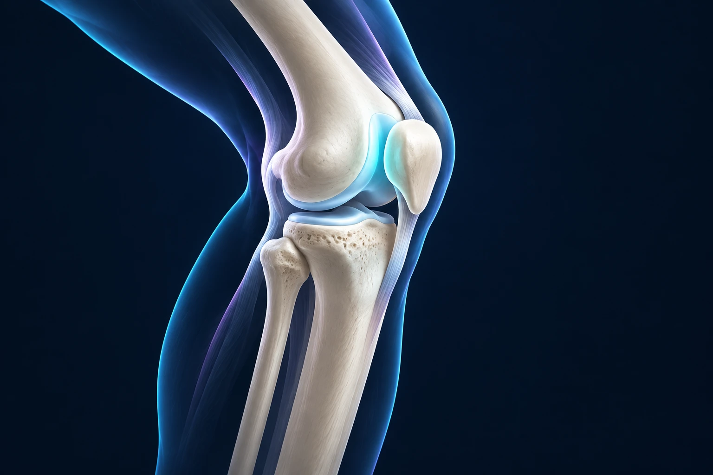

Douleur à l’avant du genou dans les escaliers : est-ce la rotule ?
Publié le

Une douleur autour de la rotule, dans les escaliers ou après une position assise prolongée, peut correspondre à une douleur fémoro-patellaire. Ce diagnostic doit être confirmé par l’examen, car toutes les douleurs antérieures du genou n’ont pas la même origine. Le traitement repose souvent sur des exercices adaptés et une meilleure gestion des activités.
Comment fonctionne l’articulation de la rotule ?
La rotule se situe à l’avant du genou. Elle participe au mécanisme qui permet de tendre la jambe, en lien avec le quadriceps, le muscle de la face antérieure de la cuisse. Lors de la flexion, elle se déplace en regard du fémur dans une zone appelée trochlée.
Vous pouvez l’imaginer comme une pièce de guidage qui améliore l’efficacité d’un système de traction. Son fonctionnement dépend de l’ensemble : muscles, tendons, forme des surfaces et coordination des mouvements. Une douleur dans cette région ne signifie donc pas automatiquement que la rotule est « déplacée ».
La douleur fémoro-patellaire désigne une gêne autour ou derrière la rotule, souvent favorisée par des activités qui chargent le genou fléchi. Il ne s’agit pas nécessairement d’une lésion grave du cartilage. University Hospitals of Liverpool, douleur fémoro-patellaire.
Pourquoi les escaliers ou les accroupissements font-ils mal ?
Ces gestes demandent un effort musculaire et modifient les contraintes entre la rotule et le fémur. Une augmentation récente des entraînements, davantage d’escaliers ou certains changements d’habitude peuvent rendre ces activités moins bien tolérées. La douleur peut également apparaître après être resté longtemps assis, genou plié.
Le contexte est souvent multifactoriel. Les capacités musculaires, la quantité d’activité et la façon de réaliser les mouvements peuvent intervenir. Chercher un seul responsable, comme la forme du pied ou la position de la rotule, ne suffit pas toujours. Royal United Hospitals Bath, information sur les douleurs fémoro-patellaires.
Pour décrire votre gêne, choisissez un exemple précis. Est-ce surtout la descente d’un escalier, le relèvement d’une chaise basse ou la fin d’une sortie de course ? Précisez si la douleur disparaît rapidement ou reste présente le lendemain. Ces nuances servent à ajuster la prise en charge.
Quels signes doivent faire rechercher autre chose ?
Une douleur après un traumatisme, un gonflement important, un véritable blocage ou une impression de rotule qui sort de sa place nécessitent une évaluation spécifique. Une luxation de rotule ne se confond pas avec une simple douleur fémoro-patellaire. Elle peut nécessiter un bilan et un traitement différents.
Une articulation rouge, chaude et douloureuse avec de la fièvre impose un avis urgent. Consultez également si l’appui devient impossible ou si le genou ne peut plus être activement tendu après un accident. Il ne faut pas attribuer ces signes à un « syndrome rotulien » sans examen.
Les douleurs du tendon rotulien, l’arthrose ou d’autres lésions peuvent aussi donner une gêne antérieure. Le médecin vérifie l’ensemble du genou et peut examiner la hanche. Les informations du Dr François Lozach sur la chirurgie du genou permettent de situer les différentes prises en charge.
Faut-il passer une IRM ?
Le bilan commence par l’histoire de la douleur et l’examen. Le médecin évalue notamment les mouvements, la force et les gestes qui déclenchent la gêne. L’imagerie est choisie lorsqu’elle peut préciser le diagnostic ou modifier le traitement ; une IRM n’est pas indispensable pour toute douleur antérieure.
Des craquements isolés ne suffisent pas à mesurer la gravité d’un problème. Inversement, une imagerie peu spectaculaire n’invalide pas votre douleur. L’objectif est de comprendre les symptômes et leur retentissement, puis de proposer un programme qui puisse être réévalué. Assurance Maladie, consultation pour une douleur du genou.
Si vous disposez déjà d’examens, apportez les images et les comptes rendus. Il n’est pas nécessaire de rechercher seul l’examen le plus sophistiqué avant d’avoir défini la question médicale.
Quels traitements sont habituellement proposés ?
La rééducation travaille les capacités du genou et, selon les besoins, celles de la hanche. Les exercices sont adaptés à votre niveau et à votre tolérance. Le choix de leur amplitude et de leur difficulté compte autant que leur nom. Un programme utile doit pouvoir progresser au fil du suivi.
L’adaptation des activités aide à réduire les sollicitations qui entretiennent la douleur. Cela peut signifier diminuer temporairement certains exercices très fléchis ou fractionner une activité. Il ne s’agit pas forcément d’interdire durablement les escaliers, la course ou le sport.
Des aides complémentaires, comme un bandage ou certaines orthèses, peuvent être discutées dans des situations sélectionnées. Elles ne remplacent pas systématiquement le travail actif. West Suffolk Hospital, information sur la douleur fémoro-patellaire.
Une opération est-elle parfois nécessaire ?
Une douleur fémoro-patellaire isolée conduit rarement d’emblée à une chirurgie. Une intervention se discute pour un problème structurel précis, après un bilan adapté et selon l’évolution. Opérer uniquement parce que la douleur dure, sans expliquer ce que le geste corrigerait, n’est pas une réponse suffisante.
Le retour aux activités se construit sur vos progrès : meilleure tolérance des escaliers, récupération de force et capacité à répéter les gestes nécessaires. Plusieurs semaines, parfois plusieurs mois, peuvent être utiles pour évaluer une évolution. L’objectif n’est pas de réussir un exercice une seule fois, mais de retrouver une activité durablement supportable.
Si cette douleur limite vos déplacements ou votre sport à Sète ou dans l’Hérault, vous pouvez prendre rendez-vous avec le Dr François Lozach à Sète. Apportez un exemple de votre programme d’activité pour discuter d’ajustements concrets.
Ces conseils sont d’ordre général et ne remplacent pas un avis médical personnalisé.